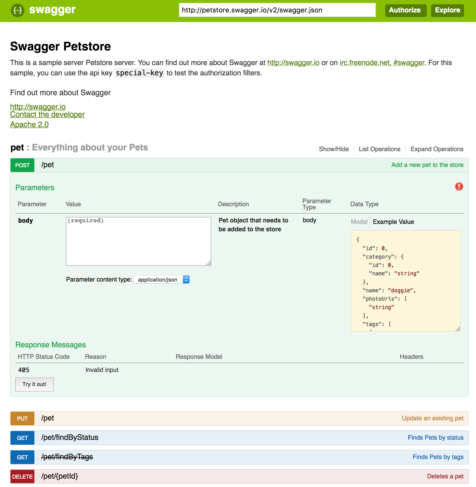

Detecting your Swagger-UI version
At times, you're going to need to know which version of Swagger-UI you use.
The first step would be to detect which major version you currently use, as the method of detecting the version has changed. If your Swagger-UI has been heavily modified and you cannot detect from the look and feel which major version you use, you'd have to try both methods to get the exact version.
To help you visually detect which version you're using, we've included supporting images.
Swagger-UI 3.X

Some distinct identifiers to Swagger-UI 3.X:
- The API version appears as a badge next to its title.
- If there are schemes or authorizations, they'd appear in a bar above the operations.
- Try it out functionality is not enabled by default.
- All the response codes in the operations appear at after the parameters.
- There's a models section after the operations.
If you've determined this is the version you have, to find the exact version:
- Open your browser's web console (changes between browsers)
- Type
versionsin the console and execute the call. - You might need to expand the result, until you get a string similar to
swaggerUi : Object { version: "3.1.6", gitRevision: "g786cd47", gitDirty: true, … }. - The version taken from that example would be
3.1.6.
Note: This functionality was added in 3.0.8. If you're unable to execute it, you're likely to use an older version, and in that case the first step would be to upgrade.
Swagger-UI 2.X and under

Some distinct identifiers to Swagger-UI 3.X:
- The API version appears at the bottom of the page.
- Schemes are not rendered.
- Authorization, if rendered, will appear next to the navigation bar.
- Try it out functionality is enabled by default.
- The successful response code would appear above the parameters, the rest below them.
- There's no models section after the operations.
If you've determined this is the version you have, to find the exact version:
- Navigate to the sources of the UI. Either on your disk or via the view page source functionality in your browser.
- Find an open the
swagger-ui.js - At the top of the page, there would be a comment containing the exact version of swagger-ui. This example shows version
2.2.9:
/**
* swagger-ui - Swagger UI is a dependency-free collection of HTML, JavaScript, and CSS assets that dynamically generate beautiful documentation from a Swagger-compliant API
* @version v2.2.9
* @link http://swagger.io
* @license Apache-2.0
*/